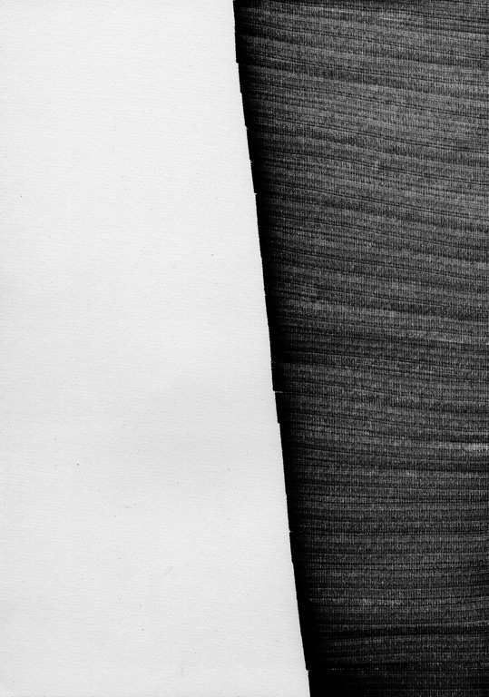

Серия графических листов под этим общим названием создана Тамарой Соколовой в 2006 году в Германии. По-русски это звучит как «сквозь, через». Некая мощная сила пробивается сквозь темные полотнища: они кажутся сплошными издали, но ажурными вблизи.
Эта сила — свет, а полотнища сплетены из черных, серых и светлосерых полос (нитей), наподобие монашеской власяницы. Не сочтите это сравнение чересчур тенденциозным. Разве это не аскетизм, присущий отцам-пустынникам: все три темы этой большой серии выполнены одним приёмом — это прямоугольники или треугольники, образованные полосками краски, как будто циновки из волокон серо-черного цвета. И это всё.
Больше вы здесь не увидите никаких красок, никаких других форм или графических приёмов.
Почему же экспозиция всех этих черно-белых листов так завораживает, проникает в самую душу своей невысказанной мыслью, тревожит неразрешимой загадкой?
Попробуем всё же разобраться в своих чувствах, внушенных Художником.
Ритм
Однотипность форм, фактур и цвета создает сквозной, единый ритм, проходящий через всю серию. Это похоже на «Болеро» Равеля или восточную музыку — японскую, арабскую, индийскую. Эта музыка строится на одной — двух музыкальных фразах с небольшими вариациями и исполняется на примитивных инструментах. Она останавливает время: одно и то же движение повторяется без конца. Слушая, забываешь о действительности, впадаешь в медитацию, почти в нирвану. Такую музыку не нужно «понимать» разумом — она действует непосредственно на наше естество, ритмизируя физиологические процессы организма.
Кроме того, графика Hindurch вызывает ощущение шероховатости и жесткости, которые, в свою очередь, ассоциируются с различными звуками природы или речи.
Звуки
Эти фактуры напоминают шорох сухих осенних листьев, гонимых ветром,
Жужжание потревоженного пчелиного роя,
Шипение серых шин авто по сухому шоссе,
Осыпь мелких камней с крутой горы,
Шорох камешков на пляже в Коктебеле от набегающей и отступающей волны,
Шопот: «не шумите, не будите спящего»...
Колорит экспозиции погружает в молчание, медитацию,
Отчуждение от сует мира сего.
Темно-серый и светло-серый с просвечивающим сквозь них белым —
Что может быть благороднее?
В эти краски природа окрасила самых симпатичных животных и птиц;
Они привычны и потому родственны нам.
Черное с белым и серым — цвет зимнего пейзажа и городских улиц.
Серый — цвет сдержанности, спокойствия, деловитости,
Скромности, самообладания, интеллигентности.
У него есть и негативные значения, он амбивалентен, как и все другие цвета, но об этом здесь не вспоминаешь: серый плох только в больших количествах, без оттенков и на дешевых фактурах.
В графике Тамары Соколовой серый богат оттенками и имеет драгоценную фактуру сложного переплетения полос и нитей.
Техника исполнения серии Hindurch на первый взгляд очень проста: ряд штрихов черной или серой краской. Но при увеличении на компьютере или под лупой можно увидеть, как бесконечно сложна и разнообразна структура этих рисунков — как сама наша жизнь, хотелось бы сказать.
В китайском искусстве есть понятие (жанр): «живопись одной черты». Рука Художника, создавшего эти большие листы, движется слева направо, проводя одну черту — не больше. Назовем это «малой формой». Все линии группируются в большие прямоугольные (или треугольные) формы различных пропорций — квадраты, прямоугольники или треугольники.
При таком строгом, почти аскетическом выборе форм работы серии на удивление разнообразны, в них разыгрывается множество вариантов композиций и пропорций геометрических фигур, и в результате каждая композиция отличается своим содержанием и настроением.
Тамара Соколова показала в этой серии новый аспект и новые возможности геометрического искусства. Я вижу особенную ценность его в том, что все линии проведены без линеек или циркулей.
Здесь заключили союз боги, говорящие на языке геометрических форм, и Человек, создающий живые вещи своей рукой.
Просветы
Тема этой «музыки для глаз» — борьба света и тьмы, черноты и белизны, их антиномичность и единство.
Увертюрой к теме служит работа «Плакат».
Здесь свет и мрак еще не вступили в борьбу, они готовятся к битве (и объятиям), они выстроились vis-a-vis, обмениваясь взглядами, оценивая силы друг друга.

Первая работа серии «Просветы» также выделяется из всего ряда. Здесь мы видим «оркестрантов», готовящихся к выступлению. Это полотнища, сотканные из черных и серых нитей (полосок краски). Пока ещё они свернуты в рулоны, но вскоре развернутся, превратятся в плоскости и составят разнообразные мотивы этой визуальной музыки.

«Просветы» — это повесть о том, как свет пробивается сквозь все преграды, раздвигает стены, проникает в потаённые обители мрака.
Серые полотна пытаются угасить свет, но всегда безуспешно. Они надвигаются на окно справа и слева двумя широкими шторами, но, почти совсем сойдясь, останавливаются в бессилии, оставляя тонкую вертикальную щель.


Они спускаются сверху и надвигаются снизу — но мощный световой поток упруго сопротивляется нашествию, и свет отвоевывает широкую полосу пространства.

Иногда эти серые шторы (шоры) почти совсем смыкаются, но и здесь остается «луч света в темном царстве», щемящая щель, кровоточащая рана, не заживающая никогда.

Порой серые панели пытаются тактично и миролюбиво образовать квадратную фигуру, наподобие обычного стандартного окна, но вскоре сбрасывают личину миролюбия, торопятся поскорее закрыть источник света, ломают свой организованный строй и делают «zerbrechen» — разрушение, террор от бессилия.


Всё же иногда силам Тени удаётся преградить путь Свету. Серые панели полностью перекрывают поле картины, не оставляя белого просвета.


Но — происходит «обыкновенное чудо»: вступая в борьбу с врагом (чужаком), герой сам обретает его черты. Кадм, брат Европы, победивший Дракона, в конце концов сам превращается в дракона. Гильгамеш и Энкиду, поборовшись, обмениваются личными признаками и становятся братьями, более близкими, чем кровные братья: они становятся одним существом в двух лицах.
Пытаясь победить свет, серые панели сами начали светиться — по контрасту с черными пятнами мрака, просочившегося в их среду.
Собственно говоря, в структуре серых полотен уже заложены черное и белое. Поэтому даже в работе, где нет ни белых, ни черных просветов, мы читаем рассказ (точнее, миф) о противостоянии и взаимодействии двух начал (назовем их для разнообразия Ян и Инь).
Вертикальная и горизонтальная штриховка квадратов чередуются, подобно шахматной доске. Контрастируя с соседними, квадраты создают прочно связанную структуру, в которой немыслимо что-либо изменить, не разрушая ее.
После всех треволнений «Просветов» эта работа возвращает нам уверенность и спокойствие духа.
Башни
Башня — один из главных архетипов человеческой культуры.
Это символ высоты: духовной, социальной, нравственной, моральной, это символ восхождения и программа жизни.
Сквозь образы башен, созданные Художником, просматриваются их прототипы — горы.
На них обитают боги, ночуют облака,
Берут начало великие реки;
У их оснований высекают храмы, а в пещерах спасаются отшельники;
На их склонах растут леса, цветут сады и виноградники,
Гнездятся птицы и звери, ютятся люди.
В горе — вся земля и всё небо.
Недаром люди обожествляли высоты и создавали сооружения, подобные им: пирамиды, зиккураты, башни, обелиски, колокольни и минареты.
Вертикаль — архетипическая форма, подобная самому Homo erectus, и, следовательно, богу, который создал человека прямостоящим.
Башни, возникшие в воображении Тамары Соколовой — это символы символов, это эйдосы гор и высотных сооружений, возникшие на Небе ещё до воплощения их в реальные горы и человеческие постройки. Взгляд Художника угадал заложенную в этой форме способность выражать различные идеи человеческого разума и состояния души.
Башня 3

На первый взгляд — загадочный, чисто формальный рисунок: треугольник расчленяется на четыре подобные формы. Почему?
Я думаю, здесь прочитывается диалектика верха и низа, вершины и подножия горы. Эти категории легко обмениваются местами, ценности их относительны. Верно сказал Поэт: Я царь, я раб, я червь, я бог.
В мифах древнего Китая есть такой сюжет: герой стремится попасть в жилище богов. Для этого он поднимается на вершину горы и затем спускается по внутреннему ходу сквозь гору, в подземелье. Там и восседают боги.
Казалось бы — проще сразу спуститься в желанное место. Но нет — без восхождения нет погружения. Высоты и глубины духа — понятия тождественные. Право Майи — направить человека «от светлой поверхности бытия к темным корням и началам» (Л. Шестов).
От дальнейших доказательств воздержимся. Читатель найдет их без труда в мировой литературе.
Башня 4

Она вонзается в небо, протыкает тучи, проникает в стратосферу и дальше — в космос. Её создал беспокойный человеческий дух, но не тот, который некогда решил: «Построим себе город и башню, высотою до небес¹. (Быт. 11:4).
Эта башня возносит человека в чистые занебесные сферы, подальше от грешной земли и честолюбивого желания: «Сделаем себе имя»...
Башня 4, пожалуй, самое экстатическое произведение Тамары Соколовой.
Здесь Художник преодолевает категорию меры, предписанную разумом и классицизмом всех времен. Такая форма не может существовать на Земле.
И даже Останкинская телевизионная башня, («перископ дьявола», как назвал её Тимур Зульфикаров), слишком плотная и техногенная, по сравнению с этим хрупким созданием фантазии Художника.
А может быть, эта «башня» — пронзающее душу озарение?
Да не разрушит её никто.
Башня 1

Её силуэт напоминает Пизанскую, неспособную упасть.
Кому неизвестно это сооружение, это чудо архитектуры?
Популярность её равна разве что Эйфелевой.
В ней борются силы Земли и Неба. Земля содрогнулась, пожелав опрокинуть башню, но Небо удержало её.
Ведь если Господь не пожелает свалить башню — напрасно старается Антипод.
Башня 6

Собственно говоря, здесь три башни, а может быть, даже шесть?
Обычно архитектурные вертикали не стоят в одиночку, как воспетая поэтом сосна на горной вершине. Они стремятся образовать ансамбль, наподобие рощи, леса или хотя бы группы в две-три башни (что характерно для современного градостроительства). Выразительность всякой вертикали ещё более возрастает при отражении её в гладкой воде бассейна, озера, реки...
Художник, изобразивший три башни, удваивает их количество, как будто отразив в воде. Если бы в серии не было задано условие двумерности, то может быть, мы увидели бы здесь целый лес башен, подобный лесу колонн в гипостильном зале древнеегипетского храма в Карнаке.
Возможно, для выражения замысла этой работы вполне достаточно трёх башен с тремя отражениями. Ведь число три не менее почтенно, чем бесконечность.
Башня 7

У этой башни есть прототипы в мире природы: ель, туя, кипарис, тополь, можжевельник… Она просвечивает насквозь, от её плотного ствола расходятся ажурные ветки.
Впрочем, нет оснований заподозрить Тамару Соколову в прямом подражании натуре. Думаю, что здесь имеет место казус самовластия материала. Разноцветные нити (полосы) пожелали продемонстрировать свой собственный цвет, каждый отдельно, во взаимодействии со сквозящим белым светом.
Башня 7 более других близка к классическим композициям: отношение ширины основания башни к её высоте — 1:2; ряд яркостей от белого к черному близок к равноступенному и соответствует законам логики (хотя и создан свободной фантазией).
Для человека западной культуры законы гармонии обладают почти неодолимой силой, подобно законам природы.
Башня 2

Эта работа отличается от других работ серии своим сугубо индивидуальным характером. В ней есть что-то капризное, изящное, «эстетное», по выражению Игоря Северянина. Она слегка изломана, устала, немного коварна: может уколоть. Здесь рука Художника изменяет свою тактику: вместо прямых линий она рисует кривые.
«Башня 2» убеждает нас, что выразительные возможности формы практически безграничны.
ОКНА
Две работы с таким названием могли бы послужить предисловием к книге Чжуан-цзы или Екатерины Андреевой «Всё и ничто».
Хотя в этих «Окнах» как будто ничего нет, кроме черных полосок, расположенных в строгой ритмической системе — они внушают мысли буквально обо всем: о конце и начале, далеком и близком, малом и большом, полном и пустом — иными словами, о тьме вещей, которые невозможно разграничить и разделить.
— «Молчи, Хэ-бо! — восклицает Бэйхай Жо. — Откуда тебе знать, где врата к ценному и ничтожному, в чем разница между малым и великим?» (Чжуан-цзы).
Обсуждать работы «Окна» с точки зрения принятых в искусствознании категорий — слишком объёмистый труд. Лучше последовать максиме мудреца Чжуан-цзы: «То, что может быть выражено словами, — это грубая сторона вещей; то, что может быть постигнуто мыслью, — это тонкая сторона вещей. За пределами грубого и тонкого находится то, что словами нельзя выразить, а мыслью нельзя постичь».
Изгоняя мысль, человек отказывается и от речи.
«Совершенномудрый осущесвляет науку безмолвия... Знающий не говорит, говорящий не знает... Дао нельзя постичь при помощи слов...» (Чжуан-цзы).
Критики модернизма в искусстве ХХ века настаивают на том, что произведение абстрактного искусства — это объект, подобный произведению природы, и поэтому не требует объяснений. Несмотря на это, и критики, и философы, и сами художники написали горы книг, объясняющих искусство модернизма и постмодернизма.
Откуда они черпают мысли, чтобы писать или говорить слова?
То, что заставляет художника создавать картину , дает также и зрителю способность ощущать заложенные в ней чувства и мысли, воспринимать их своим зрением, слухом и осязанием (благодаря ассоциациям), связывать со своим жизненным опытом. Разве нельзя всё это выразить в словах, если зритель владеет речью?
Вот, например, как мой alter ego воспринимает «Окна»:
Окно 5

Это окошко моей тюрьмы, называемой жизнью
Свет где-то там, за решеткой
А здесь, в моей келье — много ли его?
Там — свобода и хаос, а здесь строгий порядок:
Дни, ночи, годы, столетия... без конца
Потушите свет, пусть будет темно
Так легче заснуть
Навсегда
А всего-то — несколько движений руки Художника, почти механических, почти в забытьи, соблюдающих давно усвоенный элементарный порядок: светлое-темное, светлое-темное, и так, пока хватит бумаги.
Окно 9 — сплошная прозрачная стена, забранная решеткой из стержней.

Оба эти варианта «Окон» — по существу, произведения абстрактной графики, достойные занять место в ряду «решеток» Ф. Стэллы, П. Мондриана и др.
Они поддерживают здоровую традицию искусства С.И. Кирющенко, признанного лидером этого жанра.
Однако, брутальность этих форм, их безусловно черный цвет на белом фоне, их рукотворность — приметы индивидуального стиля Тамары Соколовой, явного как в графике, так и в скульптуре 90-х годов ХХ века.
Работы серии Hindurch современны в самом высоком смысле этого слова. В их стиле есть чистота конструктивизма и супрематизма, свобода «автоматического письма», сдержанность «бедного искусства» (arta povera), концептуальность «геометрического искусства». Не будем пытаться сравнивать серию с работами каких-либо конкретных мастеров нашего времени — таковых я не знаю.
Искусство Тамары Соколовой оригинально и неповторимо; в нём, помимо всех типичных черт нашего бытия, отражена яркая индивидуальность Художника.
Л. Миронова,
25.01.2011